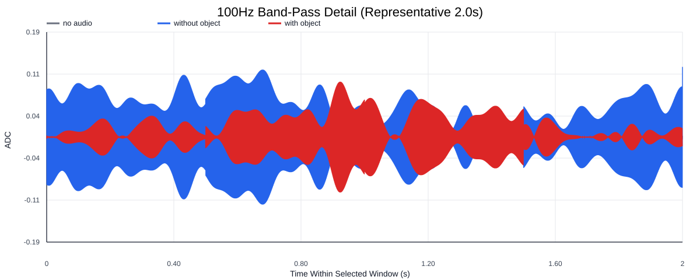
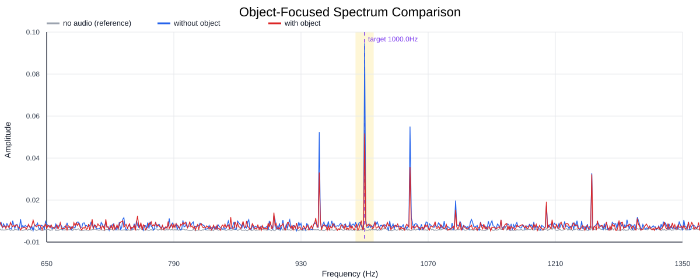
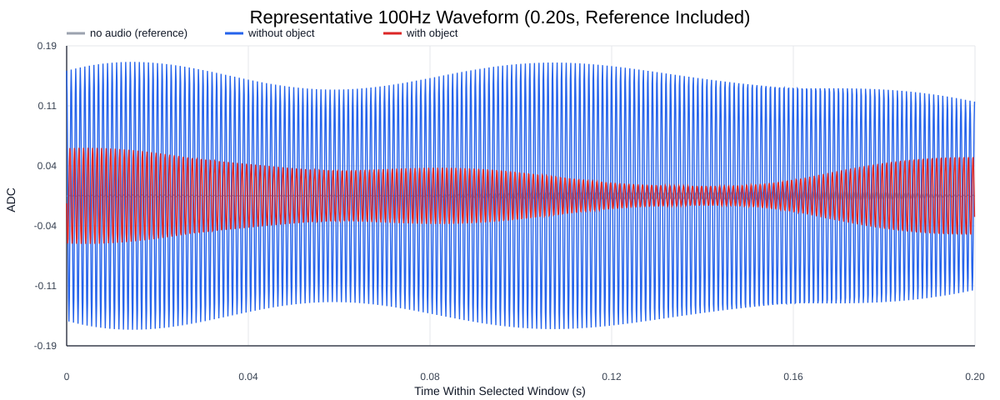
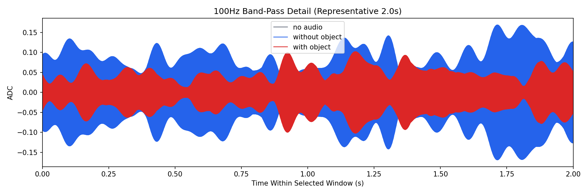
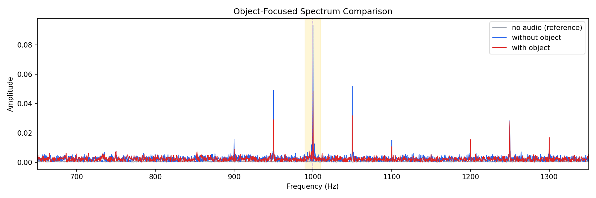
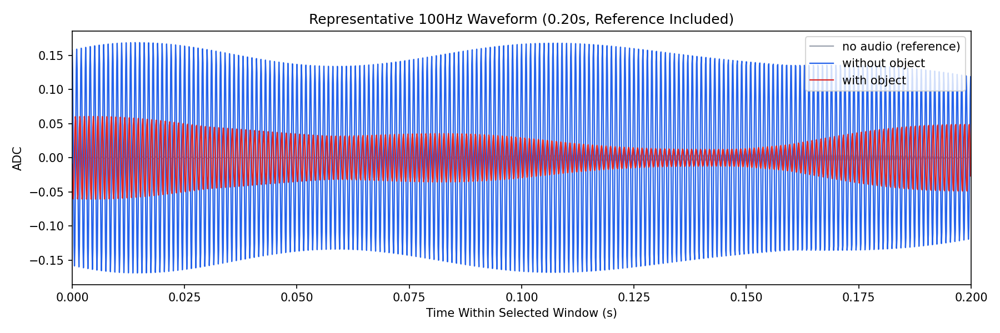

Background: F:\项目类文件夹\异物检测4.10\Data_Dual\frequency_sweep\1000Hz\repeat_03\raw\no_audio.csv
Without object: F:\项目类文件夹\异物检测4.10\Data_Dual\frequency_sweep\1000Hz\repeat_03\raw\without_object.csv
With object: F:\项目类文件夹\异物检测4.10\Data_Dual\frequency_sweep\1000Hz\repeat_03\raw\with_object.csv
| Metric | 无音频 | 100Hz无异物 | 100Hz有异物 | 无异物/无音频 | 有异物/无异物 | 有异物/无音频 |
|---|---|---|---|---|---|---|
| centered_rms | 0.046146 | 0.273163 | 0.229628 | 5.9195 | 0.8406 | 4.9761 |
| raw_target_amp | 0.000613 | 0.093428 | 0.048557 | 152.3087 | 0.5197 | 79.1584 |
| filtered_rms | 0.002934 | 0.075128 | 0.044848 | 25.6047 | 0.5970 | 15.2850 |
| filtered_target_amp | 0.000613 | 0.093428 | 0.048557 | 152.3087 | 0.5197 | 79.1584 |
| filtered_energy_ratio | 0.004043 | 0.075641 | 0.038145 | 18.7096 | 0.5043 | 9.4351 |
| window_filtered_target_amp_mean | 0.003181 | 0.101309 | 0.056706 | 31.8523 | 0.5597 | 17.8289 |
| window_filtered_target_amp_std | 0.002476 | 0.031573 | 0.027916 | 12.7523 | 0.8842 | 11.2754 |





